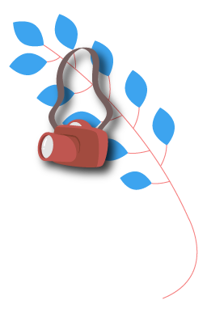
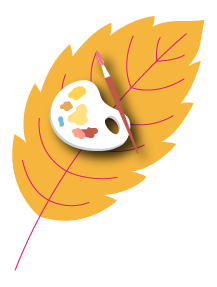
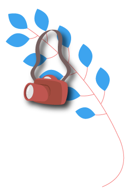
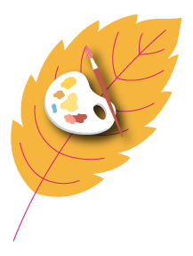
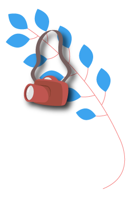
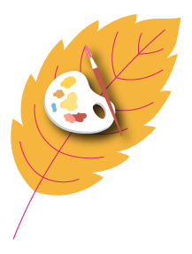
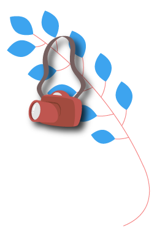
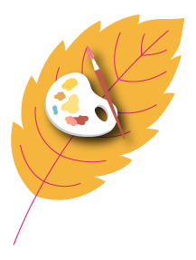
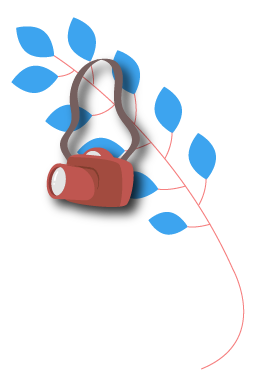
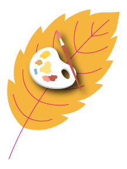

 
Fomento à cultura: Políticas Públicas para Cultura e demais legislações pertinentes (municipal, estadual e federal)
Relembrando os módulos anteriores
Fomento à cultura
Políticas públicas para a cultura
História das políticas públicas
culturais no Brasil
Ferramentas para fomento cultural
Financiamento privado
Qual o papel do produtor cultural
nesta história?
Referências
 






